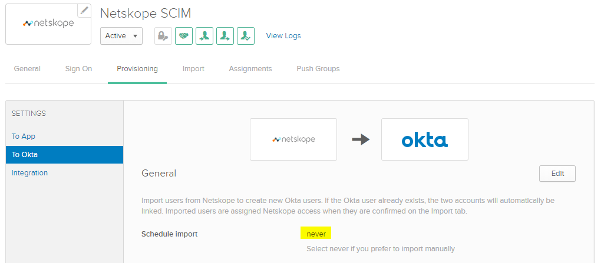
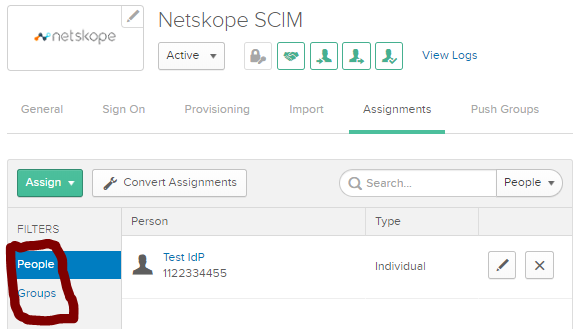
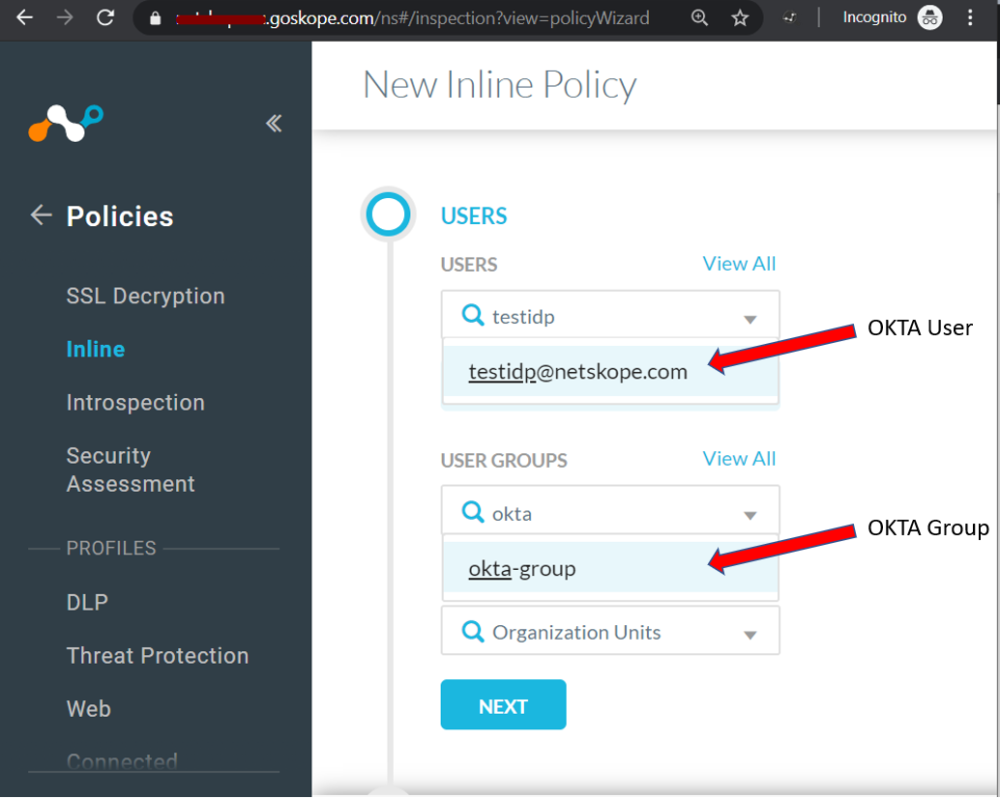

Configure Okta SCIM Integration to Onboard Users to Netskope
Log in to Okta console.

Click Admin to go to the Admin console.

Click Developer Console and select Classic UI.

From the menu select Applications > Applications.

Click Add Application.

In the search bar, enter Netskope. This will list Netskope apps. Select Netskope User Enrollment for Provisioning users.

Click Add.

Enter an Application label, Netskope SCIM (example only). Enter Subdomain (example explained below).

Go to the Sign-on tab settings and click Edit.

Under Advanced Sign-On Settings, enter the Org ID which you copied from the Netskope Tenant. Under Application Username Format, select Email, and click Save.

Next select Provisioning > Configure API Integration.

Check the box to Enable API Integration.
Enter Base URL & API Token obtained from Netskope tenant earlier and Test API Credentials.

This will display Netskope was verified successfully. Click Save.

After saving the API Integration settings, two other options will be listed. Select To OKTA and check Schedule Import is set to Never.
 Next select To App and Enable these three options: Create Users, Update User Attributes, and Deactivate Users. Click Save.

Note
You can select Okta Users or Okta Groups. Selecting groups would only sync members within the group and not the group itself.
Next select Assignments (tab) to assign users to sync to the tenant.
 To sync Okta groups, go to Push Groups (tab) and Search for the group > add group > set to “Create Group” > Save.
This will start Pushing the group to Netskope tenant and then mark it as Active in Okta.


You can view the logs to check if the sync was successfully under Reports > System Logs.

Check Okta users in the Netskope UI under Settings > Active Platform > Users.

Check Okta groups in the Netskope UI under Settings > Active Platform > Groups.


The group will only display Okta users whose accounts have been assigned to the Okta SCIM app and synced to Netskope tenant.
The Okta Users & Groups will also be available for selection in Inline Policies.

The SCIM configuration is complete.